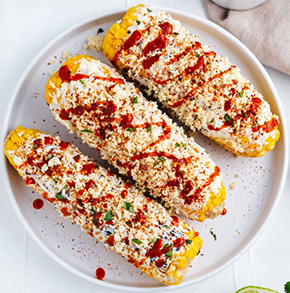

Mexican Street Corn / Elote

Description
In Spanish, elote (pronounced eh-loh-tay) describes both an ear of corn and a popular Mexican style of preparing it. Once grilled, the corn is slathered with toppings like butter, mayonnaise, Mexican crema, cotija cheese, lime, and chile seasoning.
Elotes are a type of antojito (little craving) commonly sold by street vendors (eloteros). This is why some people also refer to them as “Mexican street corn,” eluding to where they’re served and consumed.
Eloteros usually serve the loaded corn with a thick wooden skewer pierced through the bottom. This way, the toppings stay on the cob and not on your hands!
If you’ve ever had the chance to try elotes, you’ll hopefully agree that this is one of the best ways to serve corn on the cob.
Ingredients
- 4 ears of corn
- 1 lime, juiced
- ⅓ cup vegan mayo
- ⅓ cup vegan cotija cheese
- 2-3 teaspoons Tajin seasoning or ancho chile powder
- Chopped cilantro optional
- Valentina hot sauce optional
Instructions
- Preheat a cast-iron griddle to medium-high or a grill to 400°F and remove the husks from your corn cob.
- In the meantime, prepare the toppings. Mix ½ of the lime juice with vegan mayo, Mexican crema, or both. Cut the other half of the lime into wedges for serving. Crumble or grate the cotija cheese and chop the cilantro.
- When the griddle or grill is hot, cook the corn directly on it for about 10-12 minutes, making sure to rotate each cob throughout to char all sides.
- Once the corn is cooked, brush with vegan mayo or crema, a sprinkle of cotija, Tajin or ancho chile powder, and a lime wedge. You may also enjoy these served with chopped cilantro and Valentina hot sauce. Happy eating!